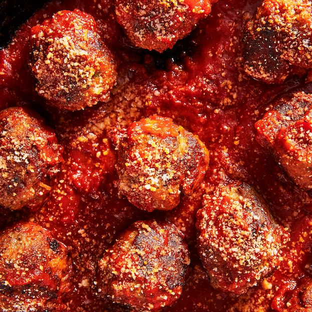

italian Meatballs

Description
There’s an art to a great meatball. It should be nicely round, packed with flavor, and tender throughout. Making them from scratch is really easy and definitely beats anything you’d buy at the store. Here's how to make perfect meatballs every time.
Ingredients
- 1 c. fresh bread crumbs
- 1/2 c. milk
- 1 lb. ground beef
- 1/2 lb. ground pork
- 1/2 lb. Italian sausage, casings removed
- 1 small onion, finely chopped
- 3 cloves garlic, minced
- Kosher salt
- Freshly ground black pepper
- 2 large eggs, beaten
- 1 c. freshly grated Parmesan
- 1/4 c. freshly chopped parsley
- 2 tbsp. extra-virgin olive oil
- 1 (32-oz.) jar marinara sauce
Steps
- In a small bowl, stir bread crumbs with milk until evenly combined. Let sit 15 minutes, or while you prep other ingredients.
- In a large bowl, use your hands to combine beef, pork, sausage, onion, and garlic. Season with salt and pepper, then gently stir in bread crumb mixture, eggs, Parmesan, and parsley until just combined. Form mixture into 1" balls.
- In a large high-sided skillet over medium heat, heat oil. Working in batches, sear meatballs on all sides to develop a crust. Set meatballs aside, reduce heat to medium-low, and add sauce to skillet. Bring sauce to a simmer then immediately add meatballs back to skillet. Cover and simmer until cooked through, about 8 minutes more.